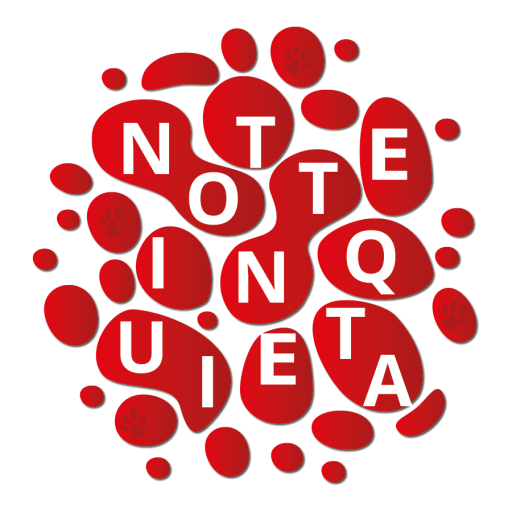
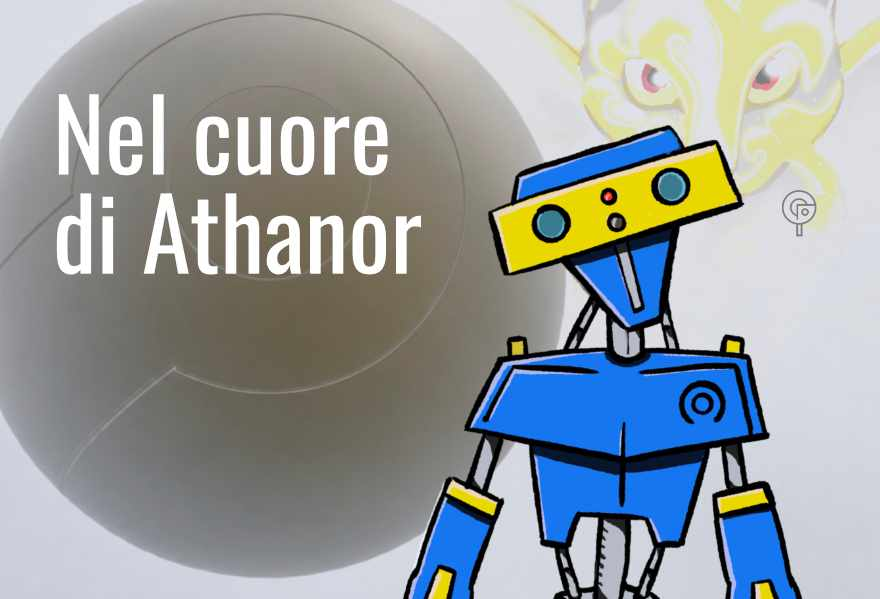
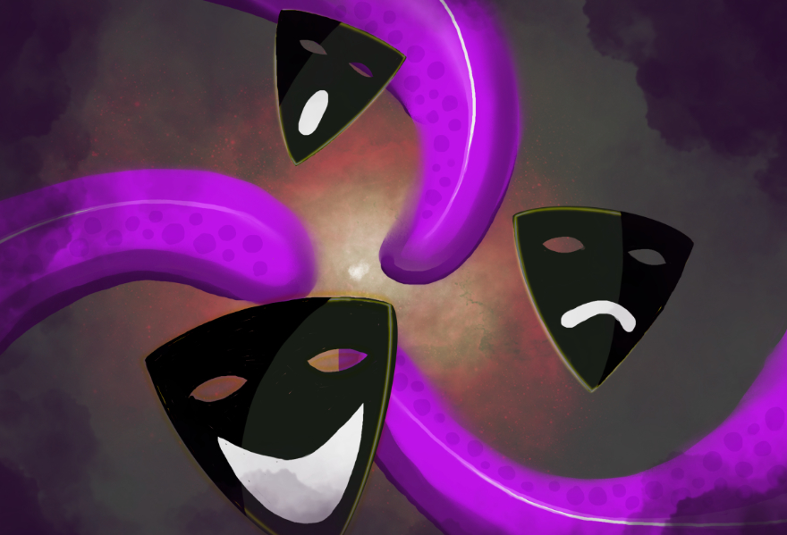
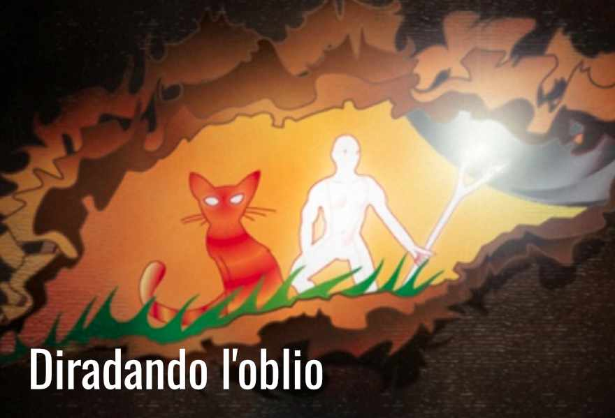
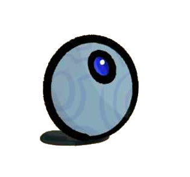
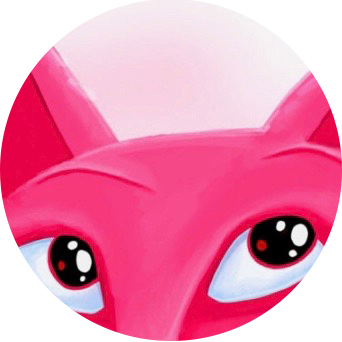
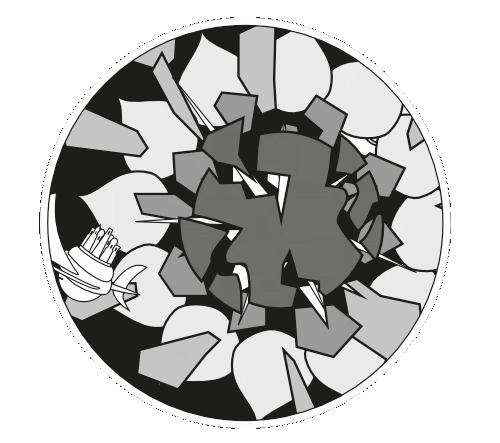
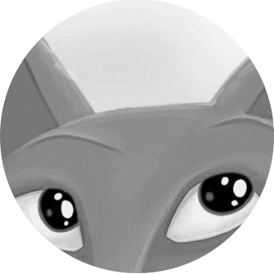
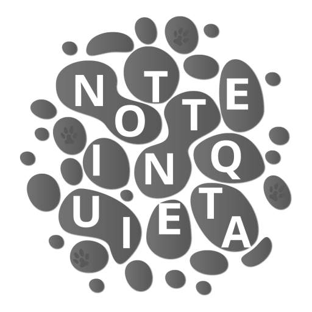
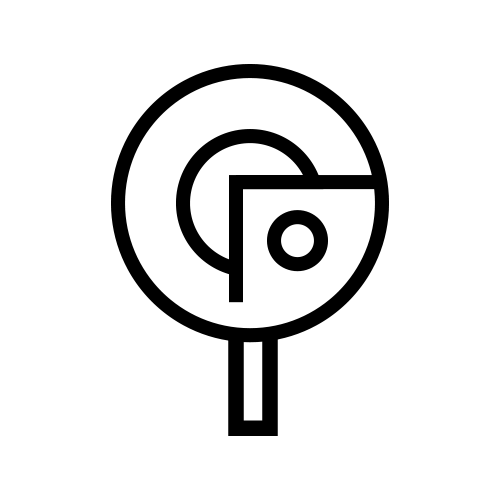

Notte Inquieta
Un universo tra parola e pittura digitale. Esplora i misteri della Notte Inquieta di Gioppo.

Leggi "Nel cuore di Athanor" su Tumblr Frammenti di una macchina che respira.
Leggi i dialoghi teatrali su Medium Testi teatrali ambientati nella saga della Notte Inquieta.
Leggi "Diradando l'oblio" su Archive of Our Own Forse il più facile ingresso nei racconti del mondo della Notte Inquieta.
Leggi la Sfera di Chrono Consulta i testi recuperati dall'artefatto chiamato Sfera di Chrono. Consulta i documenti pubblicati su Internet Archive Scopri tutte le pubblicazioni ufficiali della Notte Inquieta.
Guarda le pitture digitali di Gioppo Il lato visivo del mondo, le sue forme e altre opere dell'autore. Visita Giorgio Pozzi Online Hub su competenze, interessi e progetti dell'autore.Siti di emergenza

Mirror di Notte Inquieta Da usare se il sito ufficiale non funziona.
Mirror di Gioppo.it Da usare se il sito ufficiale non funziona. Mirror di Giorgio Pozzi Online Da usare se il sito ufficiale non funziona.Collegamenti tecnici

Struttura del progetto su GitHub Repository principale della struttura del progetto Notte Inquieta. Vault tecnico su GitHub Struttura del Vault tecnico della Notte Inquieta. Wiki tecnico su GitHub Struttura sorgente del Wiki tecnico della Notte Inquieta. Wiki tecnico online Consultazione pubblica del Wiki tecnico della Notte Inquieta. Sfera di Chrono su GitHub Struttura sorgente del Wiki Sfera di Chrono. Struttura di questa pagina su GitHub Repository principale di questa pagina. ZIP Struttura di questa pagina su Internet Archive Per ricostruire questo menu ovunque.Nel Mare di Stelle, ogni cristallo è un mondo.
